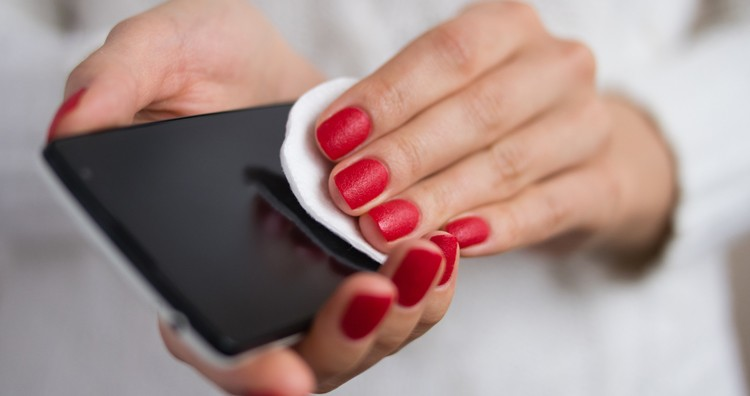

• Dec 3rd'22
Bad breath, also known as halitosis, is embarrassing and can undermine your self-esteem.
Bad breath can be caused by a variety of factors, including odorous foods, smoking,
dry mouth, medical conditions, gum disease, and sinus problems.

• Dec 2nd'22
A genius is someone who focuses low-hanging fruit and accomplishes his fitness goals without
sacrificing taste or health while also saving money.
These some brilliant habits will make your road toward fitness efficient and enjoyable.
• Dec 2nd'22
Fresh fruits and vegetables will soon become a luxury item for those who can afford chemical-free and
organic products,
as food prices skyrocket and there is no reprieve from pesticide residues in fruits and vegetables.
Pesticide use on crops, which leaves residues in the fruits and vegetables, or the use of pesticides
to clean dwellings are
two possible sources of pesticide residues in our food. Once in human systems, pesticide residues can
be the root of a number
of acute and chronic ailments. Therefore, the first step is to get rid of the pesticides as much as we
can.

• Dec 2nd'22
Getting into a routine for eye care can be difficult. Unlike your teeth, which can be kept clean with
the well-known brushing and flossing routine, your eye-care routine can be, well, difficult to see.
In order to ensure that your eyes remain in good health, here are five things you should do every day.
• Dec 2nd'22
How can your immune system be strengthened? Overall, your immune system is incredibly effective in
protecting
you from pathogenic microbes. But occasionally it fails, allowing a virus to infect you and make you
ill.
Can you influence this process to strengthen your immune system? What if your diet was improved? take
certain herbal
or vitamin supplements? make additional lifestyle adjustments in an effort to generate a nearly
flawless immunological response?
• Dec 1st'22
Making little changes in lifestyle can help you maintain good eye health and reduce your risk of
aging-related eye
diseases such age-related macular degeneration (AMD) and cataracts.
• Dec 1st'22
If you’re concerned that you may be spending too much time on your smartphone, you’re not alone.
For many people, cellphone use is an essential part of modern life. We often don’t think twice about
using our
phones for everything from work to communicating with loved ones to mindless scrolling.
There’s no formal definition of excessive phone use. If you’re concerned that your phone use is
impacting your work or relationships,
there are steps you can take to manage time on your phone.
• Dec 1st'22
Today's ears are one of the most abused sense organs, and we frequently take them for granted. As a
result, ear problems are on the rise.
Furthermore, if you frequently suffer from neck and jaw stiffness, headaches, nervous disorders, weak
bones,
or difficulty balancing your body, you should begin taking care of your ears.
This blog will go over the worst and best daily habits, as well as some simple but highly effective
practises
that will keep your ears and related organs healthy for a long time.
• Dec 1st'22
We will discuss some of the intelligent and practical ways of storing different food items in the
kitchen so
that they can stay naturally fresh and flavourful for longer. If you have a small fridge or you find
organising your
fridge problematic,this blog shall be helpful.

• Dec 1st'22
Are you the one who instinctively picks up a toothpick after a meal? Or is Sneezing the wrong way
Since childhood.
Or not changing your Pillow covers often.
• Nov 30th'22
Since our bodies are two thirds water, it is crucial to drink enough water for the organs to work
properly.
However, when consumed incorrectly, the same water causes shocking health problems such as migraine,
joint pain,
poor digestion, skin problems, hair loss, lethargy, heart problems, and kidney problems.
The sad part is that 99% of people drink water incorrectly. As a result, rather than benefiting from
this miraculous drink,
they are unintentionally harming their bodies.